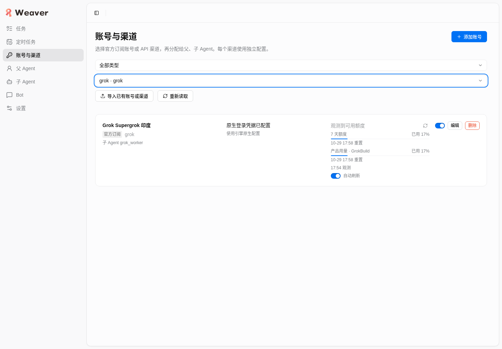
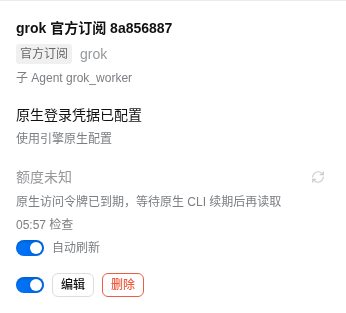

Grok 额度浏览器验收
2026-10-25 · 产品控制台 · 仅浏览器验收与安全证据
结论：部分通过。生产真实额度及开发前端等待态均通过；真正暗色外观未覆盖，因此不宣称全部验收标准通过。
真实生产状态：通过
复用 http://127.0.0.1:4737/#/channels，选择 Grok 引擎。实际卡片显示“观测到可用额度”，7 天额度及 GrokBuild 均已用 17%。刷新页面后再次筛选，读数保持一致。真实服务返回 available、stale=false，观测时间为 2026-10-25T09:54:05.743Z，剩余额度 83%。剩余 83% 来自服务安全字段，卡片直接展示已用 17%。未点击额度刷新或任何账号修改操作。

真实生产、桌面浅色、1440×1000；仅保留 Grok 筛选。
前端合成等待态：通过（边界补充）
复用开发 http://127.0.0.1:4738/#/channels。仅在本任务浏览器临时包装 window.weaver.getChannels，保留真实 policy 和配置元数据，仅替换精确目标 import_e9a31f0093aaaacc595255e0 的 quota：unknown / stale / 空 windows / observedAt=null，并附续期原因。点击“重新读取”触发实际 React 渲染。
这是浏览器前端边界合成状态，不是实时供应商返回，也不证明后端续期路径。目标卡片显示“额度未知”和“原生访问令牌已到期，等待原生 CLI 续期后再读取”，无数值、0%、耗尽或重新登录提示，进度条数量为 0。开发环境存在其他 Grok 登录缺失卡片；检查与裁图只针对精确目标，未更改任何认证。
 实际组件：续期原因完整可读、无错误登录引导。
实际组件：续期原因完整可读、无错误登录引导。

390×844 窄屏：页面宽度 390，卡片宽 346；原因完整可读，无横向溢出。
暗色与运行健康
已分别设置 light / dark 浏览器媒体偏好。dark 匹配确为 true，但页面背景仍为 rgb(249,249,250)，截图仍呈浅色；该状态文字可读，真正暗色主题未验证。未注入 CSS 或修改持久主题配置。
暗色偏好证据；不能称为暗色外观通过。
观察期 console error / warning、未捕获 JS 错误、HTTP ≥400 及失败请求均为 0，无观测到的 hydration 或模块加载错误。请求数为任务会话累计快照，未保存请求头、body、原始网络 payload 或凭据。
版本、范围与资源
仓库 HEAD：4f9efefa835150c13a781c03995bc93dc1f3c5fc。生产实际脚本：index-83mns99p.js；未独立确认生产进程所用 commit。开发为既有 Vite 工作树，观察到 6 个已跟踪文件有差异（交接描述为 4 文件补丁）；本任务未读改业务源码，未执行源码测试、构建、提交或推送。
按冻结交接，当前生产尚未部署“无观测续期待定保留 failure.message”和“unknown 空窗口展示 detail”两项源码提示改动。本次未重启生产，生产真实成功态不能替代这两项部署后的等待态验证。
浏览器投影已恢复原函数并刷新页面，确认临时包装不存在。本任务 Chrome 已关闭，profile 已删除且无 Chrome 占用；任务临时目录已回收。报告已在浏览器打开核对，附件完整、4 张图片加载，390 与 1440 视口无横向溢出；打印输出 3 页并检查了首页。既有 4737/4738 服务保留，未执行 prepare、cleanup 或重启；未更改 DB、账号、认证、policy 或封禁。
六维观察：产品意图与信息架构能清楚定位额度；业务可信保留“未知”与原因；重新读取反馈有效；桌面/窄屏间距及状态风格一致。视觉暗色覆盖不足保留为未验证项。未评估完整控制台设计系统、非目标账号或供应商即时可用性。
真实生产安全 JSON · 合成边界安全 JSON · 结论与资源记录